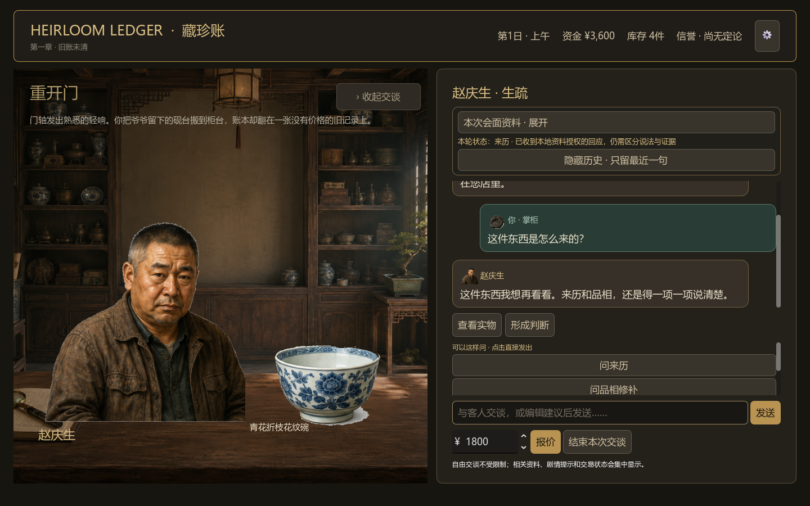
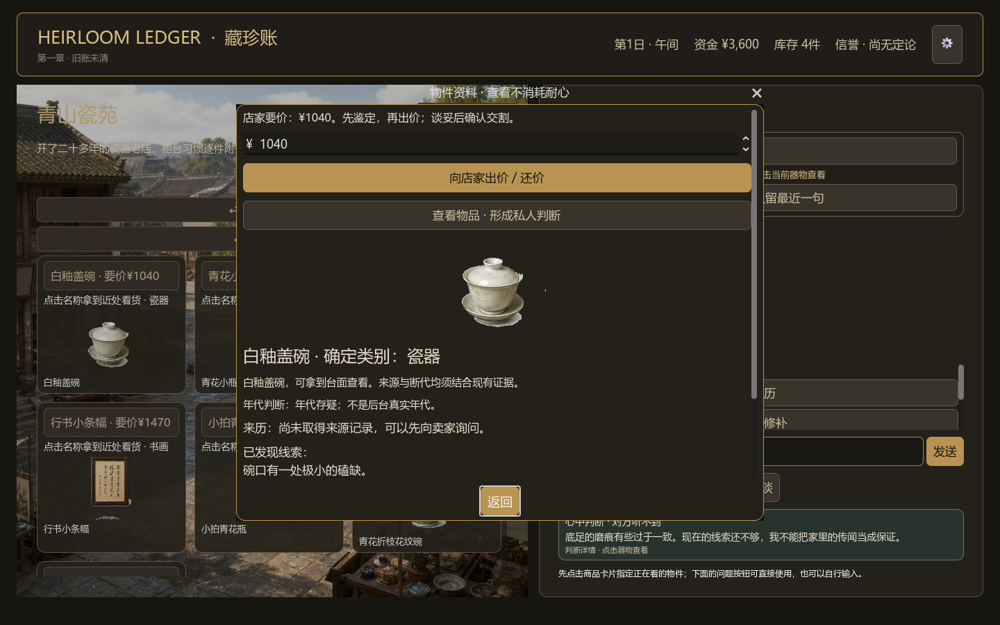
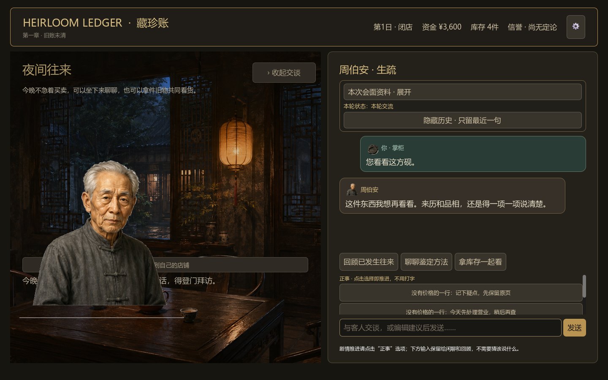
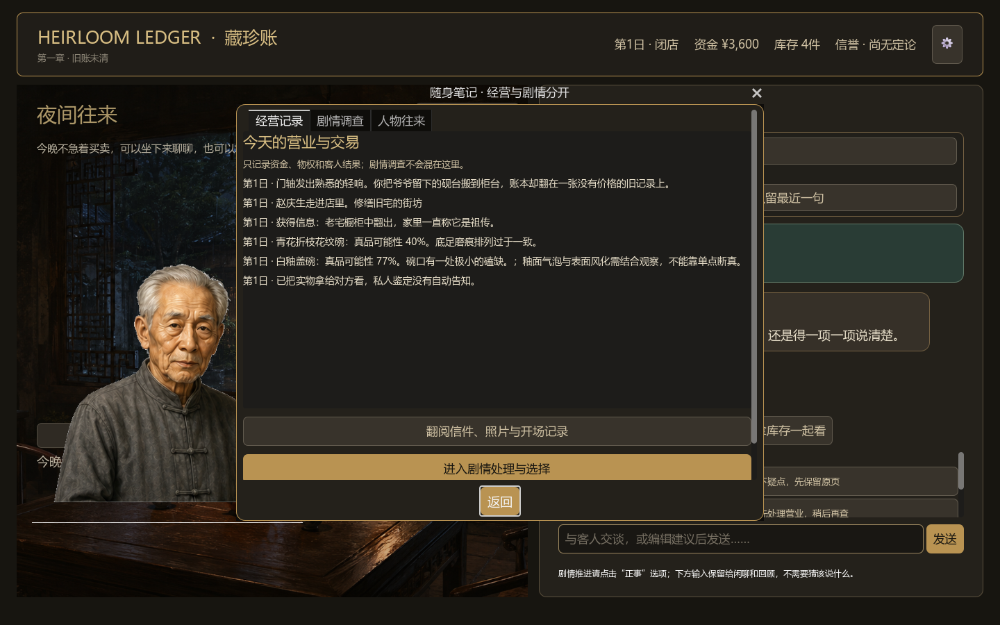

Narrative antique shop sim · Godot prototype
Heirloom Ledger藏珍账
一间小店，一本没有价格的旧账，以及一群带着不同记忆回来的人。
CHAPTER 01 / 旧账未清
01 / 通过交谈识人
客人带来的不只是货，还有各自的说法。
玩家先听来意，再决定要问什么。对话是获取交易信息和判断人物的主要玩法渠道。

通过交谈发现来意，让场景成为第一层菜单。

02 / 线索 ≠ 结论
把来源、线索和知识放在一起判断。
鉴定提供证据与不确定性，不把一个数字包装成绝对真相。玩家自己决定收购、推荐或放弃。
私人判断、物件资料和整数报价，在同一个决策链里发生。
03 / 把判断带到店外
去古玩街、拜访专家，或在拍卖里继续跟价。
有限批次的外出机会让经营节奏离开柜台，但每次行动仍然受资金、知识和关系约束。

店外不是额外的菜单，而是判断的另一种场景。

04 / 人物会记住你做过的事
关系不是一次性任务入口。
人物往来、旧账回顾和共同看货，会让一次交易变成之后仍然会回来的关系。
夜间交谈，把经营的结果带回人物的生活里。
05 / 证据链不能靠一个答案完成
照片、存根、账本和人的意愿，各自只能证明一部分。
调查笔记把经营记录、人物往来和剧情线索分开保存，让玩家看见自己知道什么，也看见还缺什么。

承认“目前不能下结论”，也是鉴定与经营的一种成熟。
A playable chapter prototype
决定你愿意为哪一种处理方式署名。
归还｜在授权与说明完整后处理｜保留待查
10CHAPTER DAYS
8RECURRING NPCS
28ITEM RECORDS
3ENDING DIRECTIONS
Heirloom Ledger｜藏珍账 · Chapter 01 / 旧账未清
Playable prototype · Dialogue shown with local test substitute